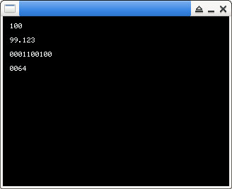

參考資訊：
https://github.com/piyushpandey013/ucGUI
https://github.com/yongzhena/ucgui-linux
main.c
#include "GUI.h"
int main(int argc, char *argv[])
{
GUI_Init();
GUI_SetBkColor(GUI_BLACK);
GUI_Clear();
GUI_SetColor(GUI_WHITE);
GUI_DispDecAt(100, 10, 10, 3);
GUI_GotoXY(10, 30);
GUI_DispFloat(99.123, 6);
GUI_GotoXY(10, 50);
GUI_DispBin(100, 10);
GUI_GotoXY(10, 70);
GUI_DispHex(100, 4);
GUI_Delay(3000);
return 0;
}
編譯、執行
$ gcc main.c -o main libucgui.a -IGUI_X -IGUI/Core -IGUI/Widget -IGUI/WM -lSDL -lm $ ./main
